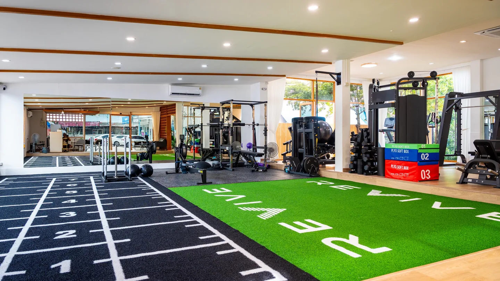
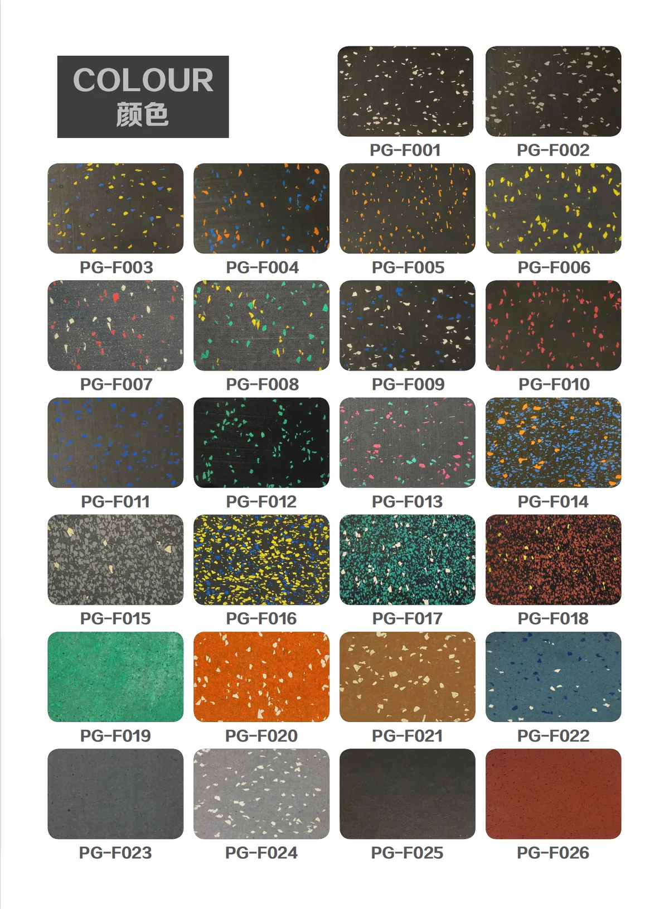
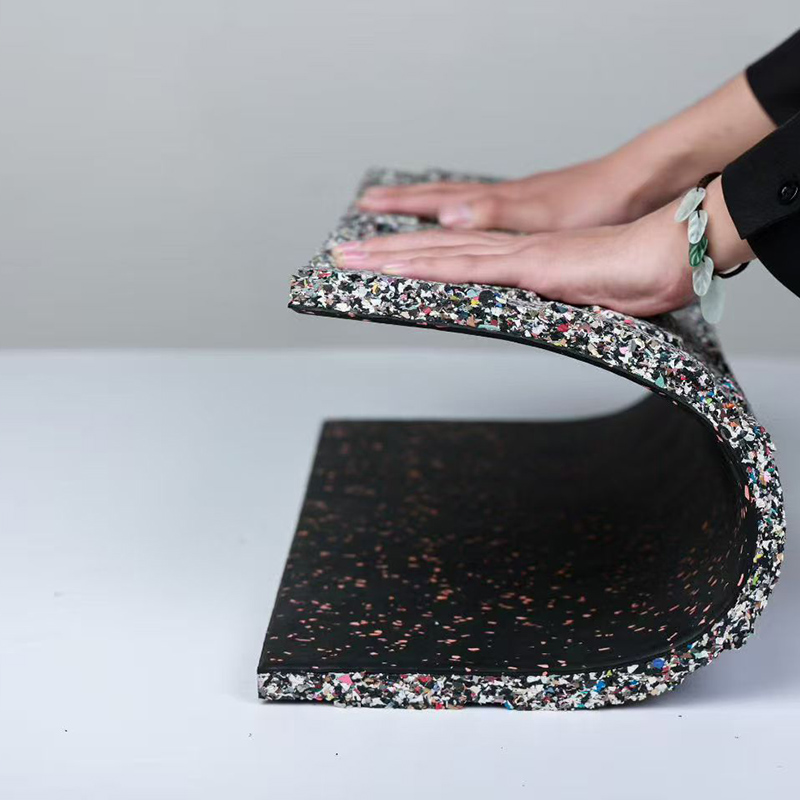
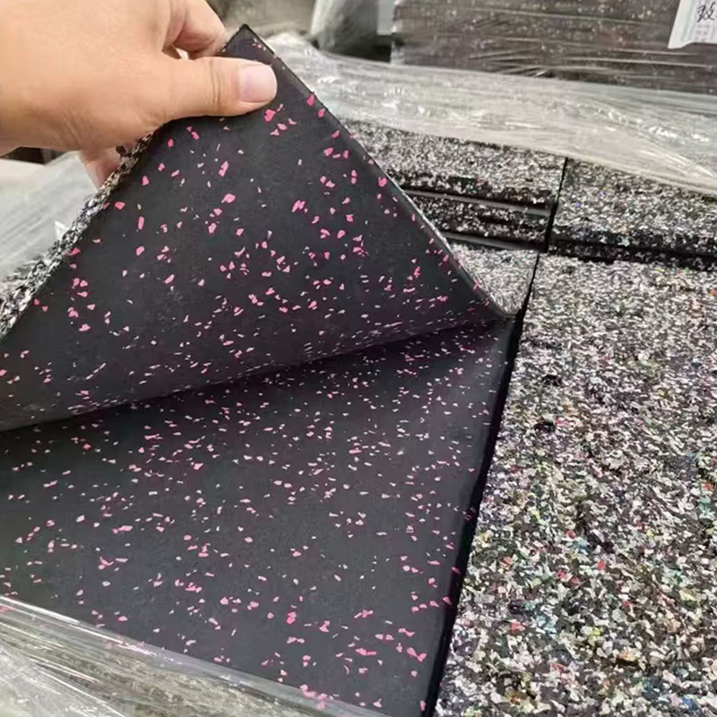
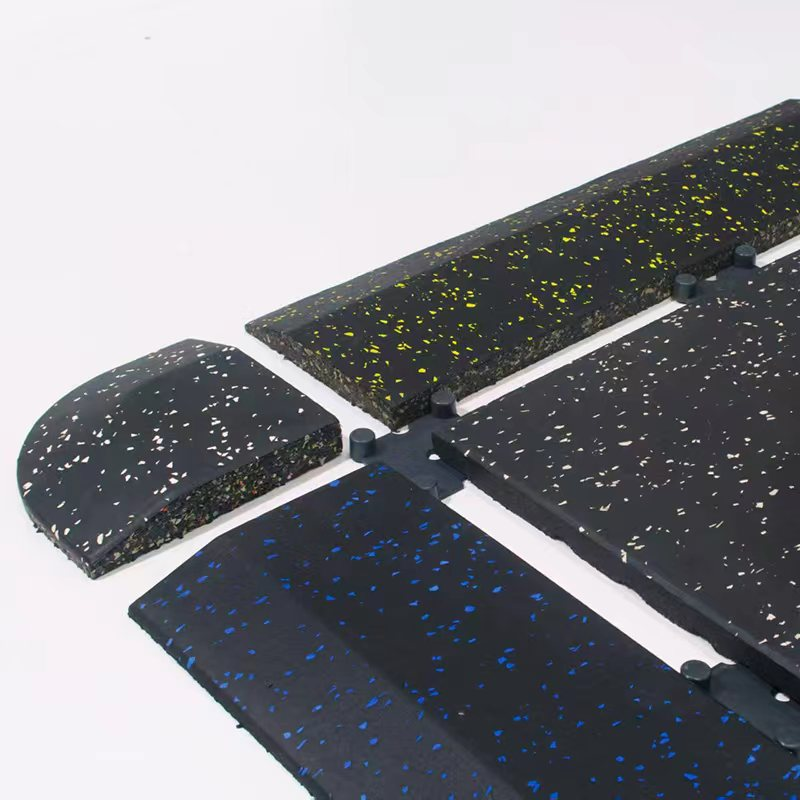

Gym Turf vs Rubber Flooring: Which Surface Goes Where?

The most practical commercial gyms use turf and rubber as complementary surfaces, not competing finishes.Short Answer
Use gym turf for sled pushes, sled pulls, sprints, carries, lunges and branded functional lanes. Use commercial rubber flooring under free weights, plate-loaded equipment and machines, where impact control, stability and noise management matter more. For most commercial gyms, the best answer is a mixed floor plan with a properly detailed transition between the two surfaces.
The Honest Answer: Most Commercial Gyms Need Both
The gym turf vs rubber flooring question is really a zoning decision. Turf is a movement surface for horizontal work and sled lanes. Rubber is a load surface for static equipment, plates and controlled impact. A wall-to-wall choice creates compromises, so put each surface where its strengths match the training.
Gym Turf vs Rubber Flooring: Quick Comparison
| Decision point | Commercial gym turf | Rubber gym flooring |
|---|---|---|
| Sled push and pull | Usually the better choice when tested with the actual sled | Possible with some sled feet, but resistance and wear can be unpredictable |
| Sprint, carry and lunge lanes | Excellent for clearly marked linear training | Usable, but less effective for lane identity and distance markings |
| Free-weight zones | Not the preferred primary surface | Usually the better choice |
| Plate-loaded and selectorized machines | Possible, but less practical for leveling and equipment movement | Usually the better choice for stable equipment zones |
| Dropped weights | Not a substitute for an impact-rated lifting surface | Better direction, but thickness and build-up must match the expected impact |
| Noise and vibration | Limited contribution compared with purpose-selected rubber | Generally better, but flooring alone cannot eliminate structure-borne vibration |
| Branding | Strong option for logos, lane numbers and distance marks | Color speckles, patterns and logos may also be customized by product |
| Cleaning | Vacuuming plus fiber-appropriate maintenance | Vacuuming and product-appropriate cleaning; seams and edges still need attention |
| Installation risk | Movement, rippling, fiber direction, seams and exposed edges | Gaps, curling, subfloor moisture and transitions |
| Best role | Dynamic and functional training | Strength, equipment and impact-management zones |
This table is a planning guide, not a universal performance standard. The finished result depends on the exact product, subfloor, installation method, equipment and operating conditions.
Which Surface Goes in Each Training Zone?
Sled push and sled pull: choose turf
A dedicated low-pile training turf is usually the better starting point for sled work. Do not assume all artificial grass produces the same resistance: pile, density, backing, fiber direction, installation and sled skids all change the feel. Test a representative sample at several loads. For usable length, lane width, turning space, seams and transition planning, follow the complete commercial sled track guide.
Sprint, carry and lunge lanes: usually turf
Turf works well for acceleration drills, farmer's carries, sandbag lunges and group training. Custom numbers and boundary lines help coaches organize intervals, but the lane still needs clear start and stop areas away from doors, columns, mirrors and equipment aisles.
Free weights and lifting platforms: choose rubber
Rubber flooring is normally the stronger direction around racks, benches, dumbbells and plate storage. That does not mean any rubber tile makes unlimited barbell dropping safe. Thickness and floor build-up depend on drop height, weight type, training volume, subfloor and structure; lifting platforms or engineered systems may still be required.
For the UMAX tile discussed here, approximately 20 mm is a practical supplier starting point for many free-weight zones, not a universal rule. Frequent Olympic lifting or sensitive multi-storey sites may need a thicker or layered system.
Strength and cardio machines: usually rubber
Rubber tiles give commercial machines a stable, serviceable base. Check point loads, leveling feet, compression and joints before installation.
Group studios: decide by programming
A sled-and-carry class benefits from turf; a strength studio usually benefits from rubber. For mixed programming, divide the room into a turf lane and rubber working bay.
What Rubber Tile Specification Is Being Compared?
The following is the current UMAX reference information. Confirm final details for the ordered SKU.
| Rubber tile item | Current project reference |
|---|---|
| Product form | Indoor matt-surface rubber tile |
| Standard sizes | 500 × 500 mm or 1,000 × 1,000 mm |
| Thickness | 15–50 mm; custom thickness directions supported |
| Construction | Rubber tile with optional EPDM color speckles; confirm the EPDM percentage for the selected SKU |
| Color and graphics | Multiple color directions, EPDM speckles, logo or pattern customization |
| Typical zones | Free-weight and machine areas |
| Base direction | Level concrete subfloor |
| Installation direction | Direct/dry laying may be considered; perimeter, connectors or adhesive must be confirmed for the room and product |
| Cleaning direction | Routine vacuuming; confirm suitable cleaners before use |
| Packing | Pallet packing |
| Indicative sample target | About 1 day after specification confirmation |
| Indicative production target | About 2 days for up to 5,000 m² after specification, order and capacity confirmation |
| Documents | SGS RoHS test report for a submitted coloured-rubber floor-mat sample and CE/CPR-related rubber-tile documentation available for project review; verify model and scope |
The stated density was provided as "1000" without a unit, so it is omitted until the unit is confirmed. Hardness also needs to be added to the final data sheet.

Confirm the current available color codes and speckle percentages before approving a project.
A product photo should show the actual surface, edge and cross-section—not only a finished-room rendering.What Turf Specification Is Being Compared?
UMAX GYMMX uses a standard 15 mm pile, 100% PE yarn and PP+SBR backing. Standard width is 2 m, with project widths of approximately 1–5 m per piece and custom graphics after layout confirmation. It can be considered for concrete or compatible rubber bases with a project-selected adhesive. Production lengths can reach 50 m, although rolls of about 30 m or less are easier to handle. A sled test and subfloor review are still required. Buyers comparing custom heights can use the 15mm vs 20mm vs 25mm gym turf guide.
What Buyers Actually Worry About
Gym owners repeatedly ask whether rubber will smell, turf will ripple, sleds will damage the strength floor and loose-laid materials will move. A gym-owner flooring thread focuses on protecting an existing floor; a sled-on-rubber discussion raises wear and resistance; and a mixed installation describes rippling near a taped turf lane. These are user experiences, not engineering evidence, but they identify useful pre-order questions.
Be honest about rubber odor
Some rubber products have an initial odor, especially after sealed transport. Do not promise "odorless" or "zero VOC" without model-specific evidence. The supplied SGS report records a pass for listed RoHS substances on one coloured-rubber sample; it does not test odor, VOC emissions, slip, impact or acoustics. For enclosed projects, request the exact SKU sample and relevant emissions documents.
Plan for weight and handling
Rubber flooring is dense, so freight, pallet weight, unloading equipment, lift access and internal handling can materially change the project cost.

Ask for a current sample because speckle size, percentage, color and surface finish can change the visual result.Get the Transition Right
The turf-to-rubber joint is often the weakest detail. Compare finished installed height, not only nominal thickness. Backing, compression, adhesive, underlay and subfloor preparation affect the final level; a bad edge can catch shoes, sled feet and trolley wheels.
Before installation, draw the transition in section and confirm:
- finished height of both systems;
- exact edge position;
- whether the turf is fully bonded;
- rubber tile restraint or connector method;
- treatment at doors, walls and movement joints;
- moisture condition of the concrete;
- whether a sled, plate trolley or machine will cross the joint.
Keep the transition away from sled turnarounds and rack feet.

Connector and edge details must match the selected tile and the real room layout.Three Practical Layout Examples
1. Boutique functional studio
Use a central turf lane for sleds and carries, with rubber on both sides for dumbbells, benches and compact racks. Keep waiting members away from the active sled path.
2. General commercial gym
Use rubber across strength and machine areas, then add a turf strip beside functional storage with clear start and turning space.
3. Performance facility
Use marked turf lanes for sleds, speed and carries, with rubber bays for racks, plates, ergs and strength stations. Keep cross-traffic behind a visible boundary.
 Surface selection works best when equipment, coaching flow and member circulation are planned together.
Surface selection works best when equipment, coaching flow and member circulation are planned together.
Common Flooring Mistakes
- Installing turf wall to wall because it looks athletic: equipment zones still need a stable surface.
- Using soft foam puzzle mats in a commercial free-weight area: compression and movement may not suit the load.
- Selecting thickness from price alone: impact, drop frequency, subfloor and structure matter.
- Assuming "EPDM flooring" means 100% EPDM: confirm construction and percentage for the exact SKU.
- Believing one certificate proves every claim: chemical, fire, slip, VOC, acoustic and impact tests have different scopes.
- Leaving freight, seams and thresholds until installation day: approve handling and transitions with the floor plan.
A Simple Pre-Order Test
Before placing a commercial order, request the exact turf and rubber samples under consideration.
- Push and pull the intended sled over the turf at several loads.
- Inspect turf movement, fiber damage and resistance in both directions.
- Place a representative machine foot or plate on the rubber sample and check stability.
- Review the tile surface, edge, underside and connector or restraint method.
- Keep the rubber sample in a representative indoor space and evaluate odor with the actual decision makers.
- Match every report to the supplier, product name, sample description, date and ordered SKU.
A sample test cannot reproduce years of commercial use, but it is more useful than selecting from a color card alone.
Frequently Asked Questions
Is gym turf better than rubber flooring?
Neither surface is universally better. Turf is usually better for sleds and marked movement lanes. Rubber is usually better for free weights, machines and controlled impact zones. Most commercial gyms perform better with both.
Can a sled be pushed on rubber gym flooring?
It may be possible, but the resistance and wear depend on the rubber finish, sled feet, load and cleaning condition. Test the actual combination. A dedicated turf lane is generally the safer planning direction for frequent commercial sled use.
How thick should rubber flooring be in a free-weight area?
For the UMAX tile discussed here, about 20 mm is a practical starting point for many free-weight zones. It is not a universal standard. Heavier, higher-frequency drops or sensitive structures may require a thicker or engineered system.
Can rubber tiles be laid directly on concrete?
Direct laying may be considered on a level, clean, dry and suitable concrete base. The tile size, room perimeter, traffic, connectors, moisture and movement risk determine whether additional restraint or adhesive is required.
Does rubber gym flooring smell?
Some products have an initial rubber odor, especially after sealed shipping. Request the exact sample, evaluate it in a representative room and confirm relevant model-specific emissions documents. A RoHS test is not an odor or VOC test.
Can turf and rubber flooring be customized with a logo?
Yes, depending on the selected model. GYMMX turf supports custom lane graphics, and the rubber tile direction supports color speckles plus logo or pattern customization. Supply vector artwork, accurate dimensions and color references for confirmation.
Plan the Floor by Function
The best commercial gym floor is not the material with the longest feature list. It is the layout that gives each activity the right surface, keeps transitions flat, supports cleaning and maintenance, and still works when the room is busy.
Use turf where members move horizontally. Use rubber where equipment and impact loads concentrate. Then test the exact products, document the transition and compare the landed project cost—not only price per square meter.
UMAX Sports supplies custom gym turf, rubber flooring and selected functional training equipment for international B2B projects. Send your floor plan, training zones, expected weight use, destination and opening date for a turf + rubber flooring zoning suggestion and project quotation.